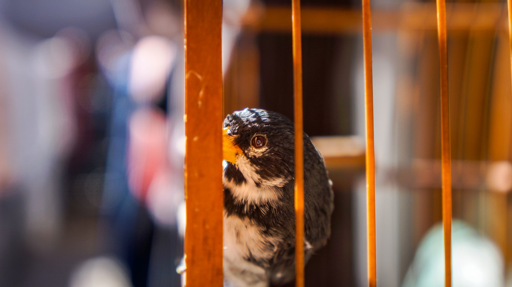
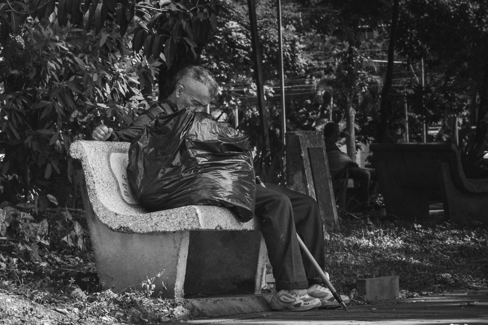
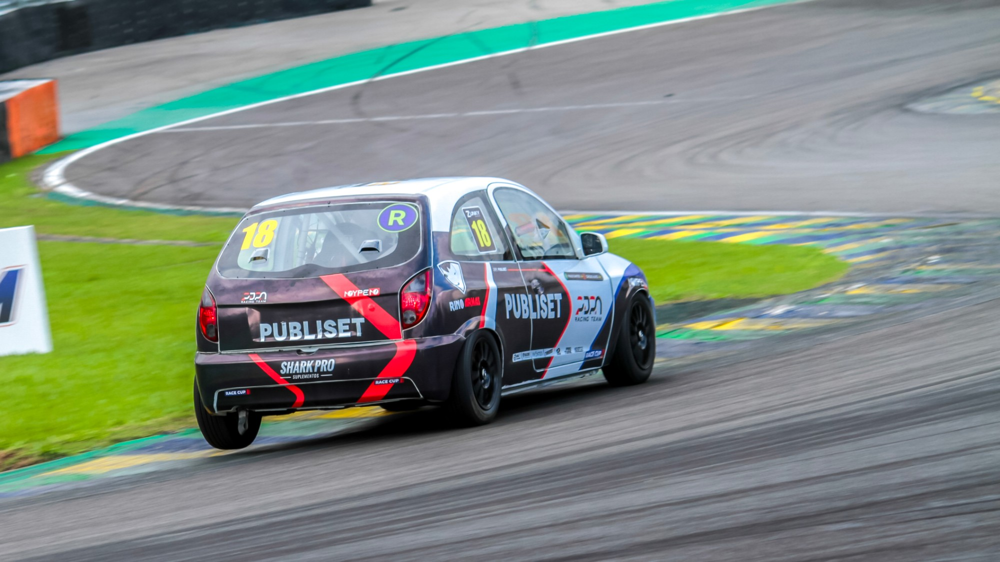
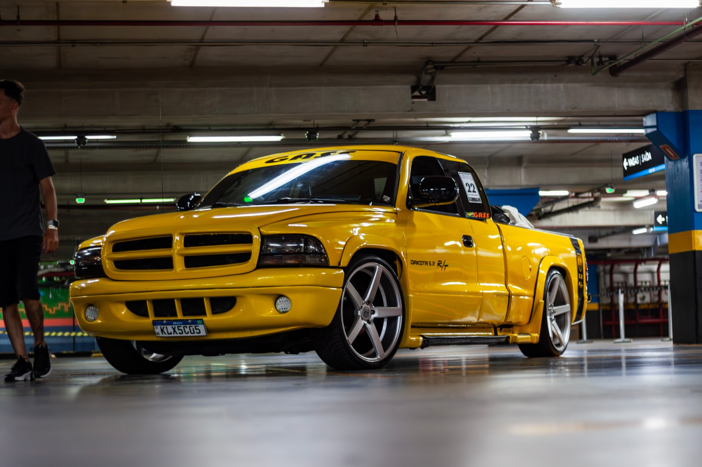
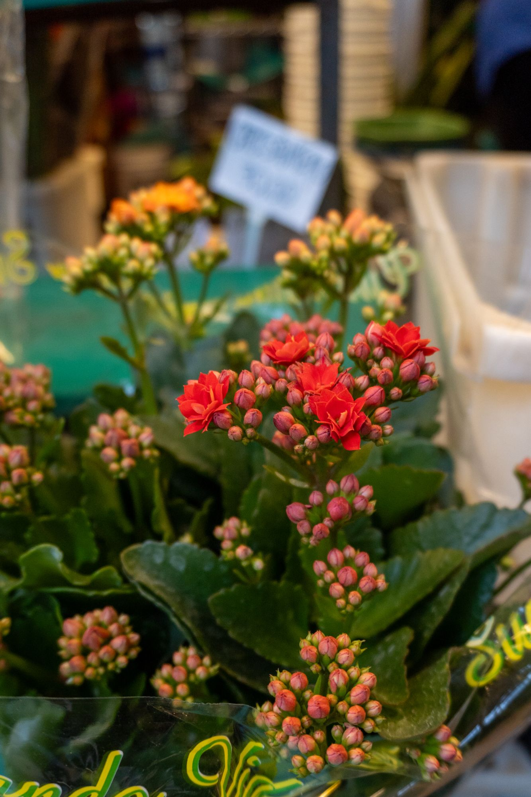
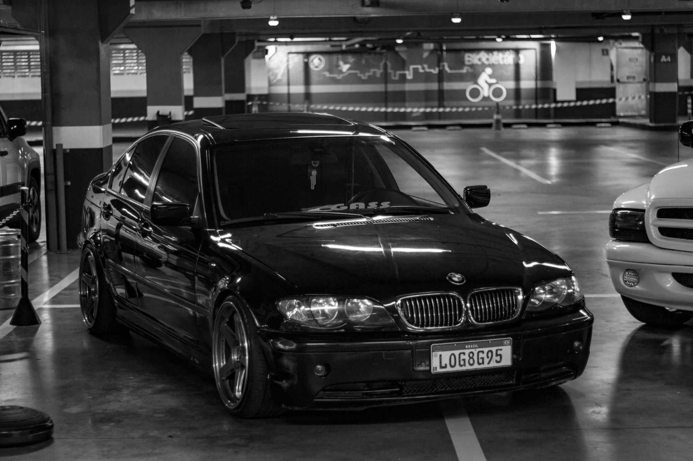
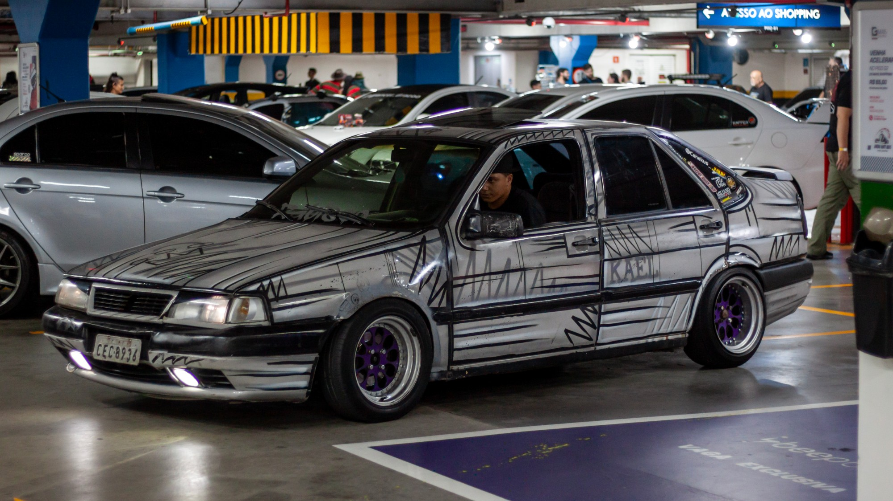
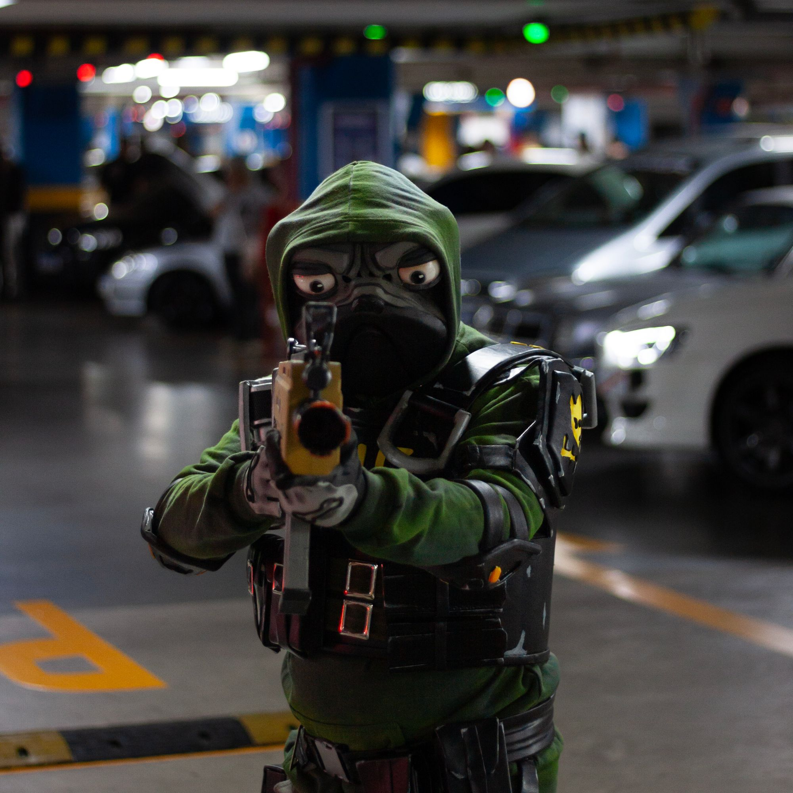
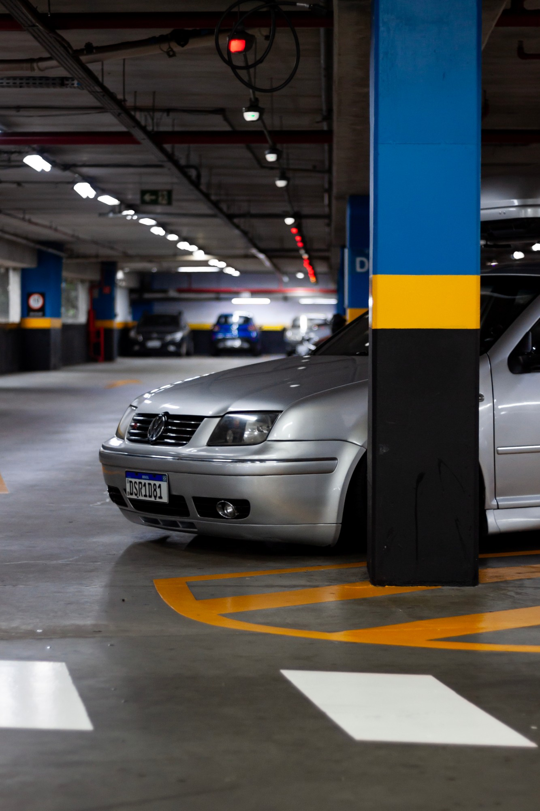
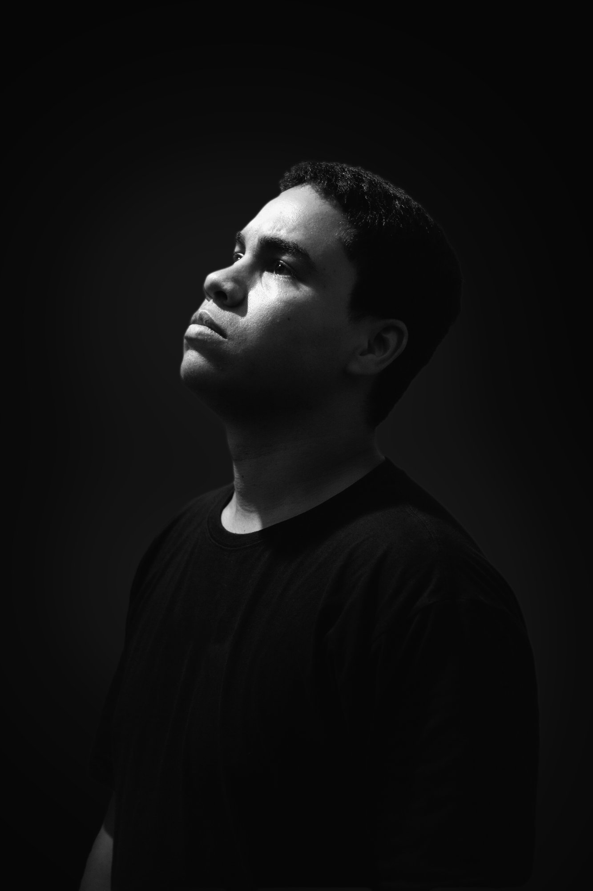

BRUNOSANTS




Forza Meeting
Quem é Bruno Sants?

A fotografia me permite explorar o que existe de único em cada pessoa, lugar e instante.
Hoje, na era digital, fica muito vago simplesmente "Tirar uma foto". Gosto de levar a emoção que estou sentindo naquele momento da fotografia adiante, para quem está visualizando minhas obras.
Não tenho nicho formado. As únicas coisas que me interessam são registrar o momento e, quanto mais natural, melhor!